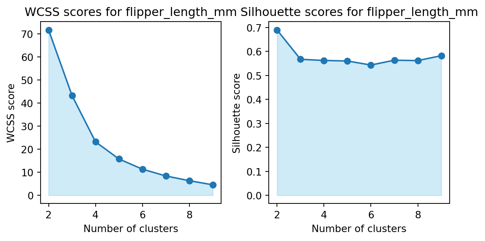

Using the “Palmer Penguins” dataset, we can use the k-means algorithm to cluster the data into groups. The dataset contains measurements of penguins from three different species: Adelie, Chinstrap, and Gentoo. The measurements include the length and depth of the penguin’s bill, the length of the flipper, and the body mass. We can use these measurements to cluster the penguins into groups based on their physical characteristics. 3 penguin species are present in the dataset, so we can use k=3 clusters. 3 penguins were removed from the import as they are missing data. I will make plots of the varius steps the algorithm takes so you can “see” the algorithm working. I will also calculate both the within-cluster-sum-of-squares and silhouette scores and plot the results for various numbers of clusters (ie, K=2,3,…,7) and determine how many clusers are suggested by these two metrics.
Code
import pandas as pdimport numpy as npimport matplotlib.pyplot as pltimport statsmodels.api as smfrom statsmodels.formula.api import olsimport statsmodels.formula.api as smfimport scipy.stats as statsfrom scipy.stats import ttest_indimport numpy as npfrom scipy.stats import normfrom scipy.optimize import minimizefrom scipy.optimize import minimize_scalarimport pingouin as pgimport shapimport xgboost as xgbfrom itertools import combinationsfrom sklearn.linear_model import LinearRegressionfrom sklearn.ensemble import RandomForestRegressorfrom sklearn.model_selection import train_test_splitfrom sklearn.datasets import load_irisfrom sklearn.preprocessing import StandardScalerimport numpy as npfrom sklearn.preprocessing import StandardScalerimport matplotlib.pyplot as pltfrom sklearn.metrics import pairwise_distances_argminimport seaborn as snsimport matplotlib.pyplot as pltfrom sklearn.cluster import KMeansfrom sklearn.metrics import silhouette_scorefrom sklearn.preprocessing import LabelEncoderpenguin_data ="/Users/peteratkins/Desktop/Website/penguins.csv"df_penguins = pd.read_csv(penguin_data)print(df_penguins.head())
species island bill_length_mm bill_depth_mm flipper_length_mm \
0 Adelie Torgersen 39.1 18.7 181
1 Adelie Torgersen 39.5 17.4 186
2 Adelie Torgersen 40.3 18.0 195
3 Adelie Torgersen 36.7 19.3 193
4 Adelie Torgersen 39.3 20.6 190
body_mass_g sex year
0 3750 male 2007
1 3800 female 2007
2 3250 female 2007
3 3450 female 2007
4 3650 male 2007
K-means by hand
This is the first iteration of the k-means algorithm by hand. The data is plotted with the initial random centers. The algorithm will continue to iterate until the centers converge. The process is visualized at each step to show how the algorithm is working. The final clusters are shown below.
Using sklearn, we can perform k-means clustering on the penguin data. The data is scaled and the k-means model is fit to the data. The cluster assignments and centroids are then used to create a plot of the data points with their assigned cluster colors. The centroids are also plotted as black points. The final plot is shown below.
Within-Cluster-Sum-of-Squares (WCSS) and Silhouette Scores
The WCSS is a measure of the compactness of the clusters, with lower values indicating better clustering. The silhouette score is a measure of how similar an object is to its own cluster compared to other clusters, with higher values indicating better clustering. The WCSS and silhouette scores are calculated for K clusters for each feature - body mass, flipper length, bill depth, and bill length - and plotted below.
Code
wcss_scores_features = {feature: [] for feature in features}silhouette_scores_features = {feature: [] for feature in features}n_clusters_range =range(2, 10)for feature in features: data_scaled_feature = StandardScaler().fit_transform(df_penguins[[feature]]) wcss_scores = [] silhouette_scores = []for n_clusters in n_clusters_range: kmeans = KMeans(n_clusters=n_clusters, n_init=10, random_state=2) kmeans.fit(data_scaled_feature) wcss_scores.append(kmeans.inertia_) silhouette_scores.append(silhouette_score(data_scaled_feature, kmeans.labels_)) wcss_scores_features[feature] = wcss_scores silhouette_scores_features[feature] = silhouette_scoresfor feature in features: fig, axs = plt.subplots(1, 2, figsize=(14, 7)) axs[0].plot(n_clusters_range, wcss_scores_features[feature], marker='o') axs[0].fill_between(n_clusters_range, wcss_scores_features[feature], color='skyblue', alpha=0.4) axs[0].set_title(f'WCSS scores for {feature}') axs[0].set_xlabel('Number of clusters') axs[0].set_ylabel('WCSS score') axs[1].plot(n_clusters_range, silhouette_scores_features[feature], marker='o') axs[1].fill_between(n_clusters_range, silhouette_scores_features[feature], color='skyblue', alpha=0.4) axs[1].set_title(f'Silhouette scores for {feature}') axs[1].set_xlabel('Number of clusters') axs[1].set_ylabel('Silhouette score') plt.tight_layout() plt.show()

Additional Clustering by Species and Feature
The clustering results can be visualized by plotting the data points with their assigned cluster colors for each feature. The centroids are also plotted as black points. The final plots are shown below. The reason some parts of the graph look like clusters and others look like normal distributions is because of the nature of the data and the features. Some features may be more effective at separating the species into distinct clusters, while others may not show clear separation. The normal distributions along the diagonal represent the distribution of individual features, not the clusters.